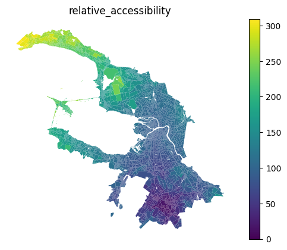

Network accessibility
[1]:
import pandas as pd
blocks_gdf = pd.read_pickle('./../../data/saint_petersburg/blocks.pickle')
accessibility_matrix = pd.read_pickle('./../../data/saint_petersburg/accessibility_matrix_intermodal.pickle')
Utils
[2]:
import geopandas as gpd
def plot_accessibility(accessibility_df : pd.DataFrame, method):
gdf = blocks_gdf[['geometry']].join(accessibility_df)
column = [c for c in gdf.columns if 'accessibility' in c][0]
ax = gdf.plot(column=column, legend=True)
ax.set_axis_off()
ax.set_title(method.__name__)
Median accessibility
Certified classic
[3]:
from blocksnet.analysis.network import median_accessibility
med_acc_df = median_accessibility(accessibility_matrix)
med_acc_df.head()
/home/vasilstar/masterplanning/.venv/lib/python3.10/site-packages/pandas/io/formats/format.py:1458: RuntimeWarning: overflow encountered in cast
has_large_values = (abs_vals > 1e6).any()
[3]:
| median_accessibility | |
|---|---|
| 0 | 88.0625 |
| 1 | 88.1875 |
| 2 | 121.0625 |
| 3 | 123.8125 |
| 4 | 109.5625 |
[4]:
plot_accessibility(med_acc_df, median_accessibility)
Max accessibility
[5]:
from blocksnet.analysis.network import max_accessibility
max_acc_df = max_accessibility(accessibility_matrix)
max_acc_df.head()
/home/vasilstar/masterplanning/.venv/lib/python3.10/site-packages/pandas/io/formats/format.py:1458: RuntimeWarning: overflow encountered in cast
has_large_values = (abs_vals > 1e6).any()
[5]:
| max_accessibility | |
|---|---|
| 0 | 290.00 |
| 1 | 285.50 |
| 2 | 328.50 |
| 3 | 331.25 |
| 4 | 319.75 |
[6]:
plot_accessibility(max_acc_df, max_accessibility)
Area weighted accessibility
[7]:
from blocksnet.analysis.network import area_accessibility
area_acc_df = area_accessibility(accessibility_matrix[[123,124]], blocks_gdf)
area_acc_df.head()
[7]:
| area_accessibility | |
|---|---|
| 0 | 58.846517 |
| 1 | 80.763378 |
| 2 | 59.138607 |
| 3 | 61.845134 |
| 4 | 29.576284 |
[8]:
plot_accessibility(area_acc_df, area_accessibility)
Mean accessibility
[9]:
from blocksnet.analysis.network import mean_accessibility
mean_acc_df = mean_accessibility(accessibility_matrix)
mean_acc_df.head()
/home/vasilstar/masterplanning/.venv/lib/python3.10/site-packages/pandas/io/formats/format.py:1458: RuntimeWarning: overflow encountered in cast
has_large_values = (abs_vals > 1e6).any()
[9]:
| mean_accessibility | |
|---|---|
| 0 | 102.875 |
| 1 | 101.875 |
| 2 | 135.875 |
| 3 | 138.500 |
| 4 | 124.000 |
[10]:
plot_accessibility(mean_acc_df, mean_accessibility)
Relative accessibility
[11]:
from blocksnet.analysis.network import relative_accessibility
block_id = 123
rel_acc_df = relative_accessibility(accessibility_matrix, block_id)
rel_acc_df.head()
/home/vasilstar/masterplanning/.venv/lib/python3.10/site-packages/pandas/io/formats/format.py:1458: RuntimeWarning: overflow encountered in cast
has_large_values = (abs_vals > 1e6).any()
[11]:
| relative_accessibility | |
|---|---|
| 0 | 58.031250 |
| 1 | 79.937500 |
| 2 | 63.593750 |
| 3 | 66.312500 |
| 4 | 24.109375 |
[12]:
plot_accessibility(rel_acc_df, relative_accessibility)

Land use accessibility
[13]:
from blocksnet.enums import LandUse
from blocksnet.analysis.network import land_use_accessibility
lu_acc_df = land_use_accessibility(accessibility_matrix, blocks_gdf, LandUse.BUSINESS, out=True)
lu_acc_df.head()
/home/vasilstar/masterplanning/.venv/lib/python3.10/site-packages/pandas/io/formats/format.py:1458: RuntimeWarning: overflow encountered in cast
has_large_values = (abs_vals > 1e6).any()
[13]:
| land_use_accessibility | |
|---|---|
| 0 | 73.9375 |
| 1 | 70.9375 |
| 2 | 111.5625 |
| 3 | 114.2500 |
| 4 | 103.0625 |
[14]:
plot_accessibility(lu_acc_df, land_use_accessibility)
Land use accessibility matrix
[15]:
from blocksnet.analysis.network import land_use_accessibility_matrix
lu_acc_mx = land_use_accessibility_matrix(accessibility_matrix, blocks_gdf)
lu_acc_mx
[15]:
| LandUse.RESIDENTIAL | LandUse.BUSINESS | LandUse.RECREATION | LandUse.INDUSTRIAL | LandUse.TRANSPORT | LandUse.SPECIAL | LandUse.AGRICULTURE | |
|---|---|---|---|---|---|---|---|
| LandUse.RESIDENTIAL | 93.5625 | 85.0000 | 114.750 | 93.9375 | 87.5625 | 115.5000 | 120.2500 |
| LandUse.BUSINESS | 84.8750 | 65.8125 | 107.000 | 82.2500 | 71.1875 | 106.0625 | 113.8750 |
| LandUse.RECREATION | 114.6250 | 106.8125 | 129.125 | 119.1250 | 111.1250 | 136.0000 | 149.3750 |
| LandUse.INDUSTRIAL | 94.0000 | 82.3125 | 119.250 | 90.0000 | 83.8750 | 115.7500 | 115.7500 |
| LandUse.TRANSPORT | 87.5625 | 70.9375 | 111.250 | 83.8750 | 74.7500 | 110.5000 | 114.5625 |
| LandUse.SPECIAL | 115.4375 | 106.7500 | 135.125 | 116.0625 | 110.8750 | 128.1250 | 140.6250 |
| LandUse.AGRICULTURE | 119.6250 | 113.1250 | 149.125 | 115.0000 | 113.5000 | 140.3750 | 112.7500 |